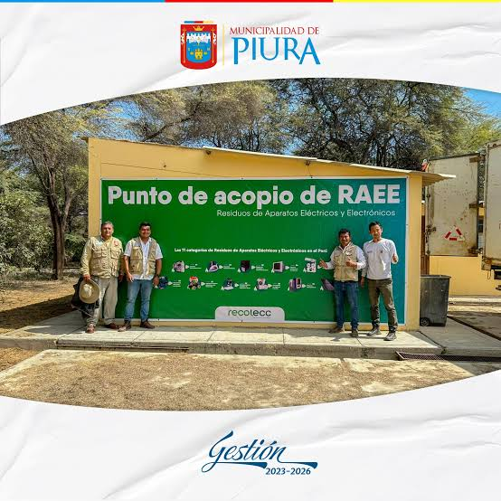
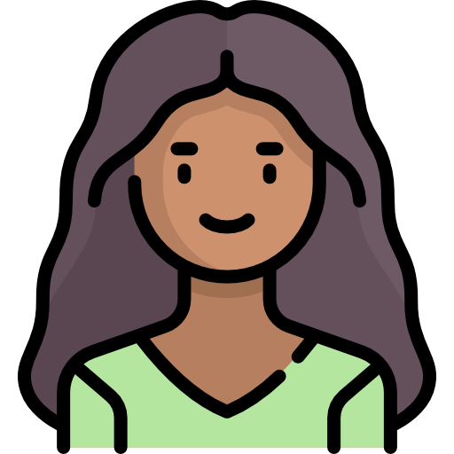

Reutilizar primero
Facilitar que los aparatos operativos encuentren una nueva persona usuaria.
QUIÉNES SOMOS / PIURA, PERÚ
Piura Circular propone una forma cercana de gestionar los residuos de aparatos eléctricos y electrónicos, poniendo en contacto a quienes tienen un equipo con quienes pueden darle otro uso.

EL PROBLEMA
Celulares, laptops, cables y electrodomésticos contienen materiales que pueden recuperarse, pero también componentes que requieren un manejo adecuado. Cuando quedan guardados o se mezclan con la basura común, se pierde valor y aumenta el riesgo ambiental.
En Piura, la información y las rutas de entrega no siempre están al alcance de todos. La primera tarea es hacerlas visibles.
Conoce cómo disponerlos ↗LA PROPUESTA
Un punto de encuentro digital entre personas, técnicos, talleres y espacios de acopio.
Facilitar que los aparatos operativos encuentren una nueva persona usuaria.
Acercar equipos reparables a técnicos y talleres locales.
Orientar el residuo no reutilizable hacia puntos de acopio adecuados.
EL RECORRIDO
Una propuesta académica que toma forma con la realidad local como punto de partida.
Identificamos el desafío de los RAEE y las barreras para su manejo adecuado.
Organizamos rutas simples para conectar reutilización, reparación y acopio.
Reunimos recursos, orientación y comunidad en una experiencia digital.
EL EQUIPO
Seis estudiantes de Ingeniería de Sistemas organizan su trabajo entre análisis, diseño, desarrollo y calidad del producto.
.png) Foto aquí
Foto aquí
Ingeniería de Sistemas · Coordinación y análisis de requisitos

Foto aquíIngeniería de Sistemas · Análisis de procesos y documentación
Ingeniería de Sistemas · Diseño UX/UI y arquitectura de información
Ingeniería de Sistemas · Desarrollo frontend e integración
.png) Foto aquí
Foto aquí
Ingeniería de Sistemas · Desarrollo backend y gestión de datos
.png) Foto aquí
Foto aquí
Ingeniería de Sistemas · Pruebas y aseguramiento de calidad